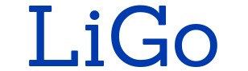

<div class="start_flex">
    <div class="outer_flex">
        <div class="logo_links">
            
        </div>
        <div class="text_buttons_rechts">
            <div class="start_text">
                LiGo ist ein Selbstlernkurs zu literaturwissenschaftlichen Grundbegriffen.<br/>
                Lassen Sie sich neue Begriffe erklären und an Beispielen demonstrieren.<br/>
                Überprüfen Sie Ihr gesammeltes Wissen anhand von Übungen und Tests.<br/>
            </div>
            <div class="inner_flex">
                <div><a href="{{'_pages/hauptauswahl/wissensbereiche.html' | relative_url}}" class="button-m">Wissensbereiche</a></div>
                <div><a href="{{'_pages/hauptauswahl/verzeichnisse.html' | relative_url}}" class="button-m">Verzeichnisse</a></div>
                <div><a href="{{'_pages/hauptauswahl/ueber_ligo.html' | relative_url}}" class="button-m">Über LiGo</a></div>
                <div><a href="{{'_pages/hauptauswahl/tests.html' | relative_url}}" class="button-m">Tests</a></div>
            </div>
        </div>
    </div>
</div>